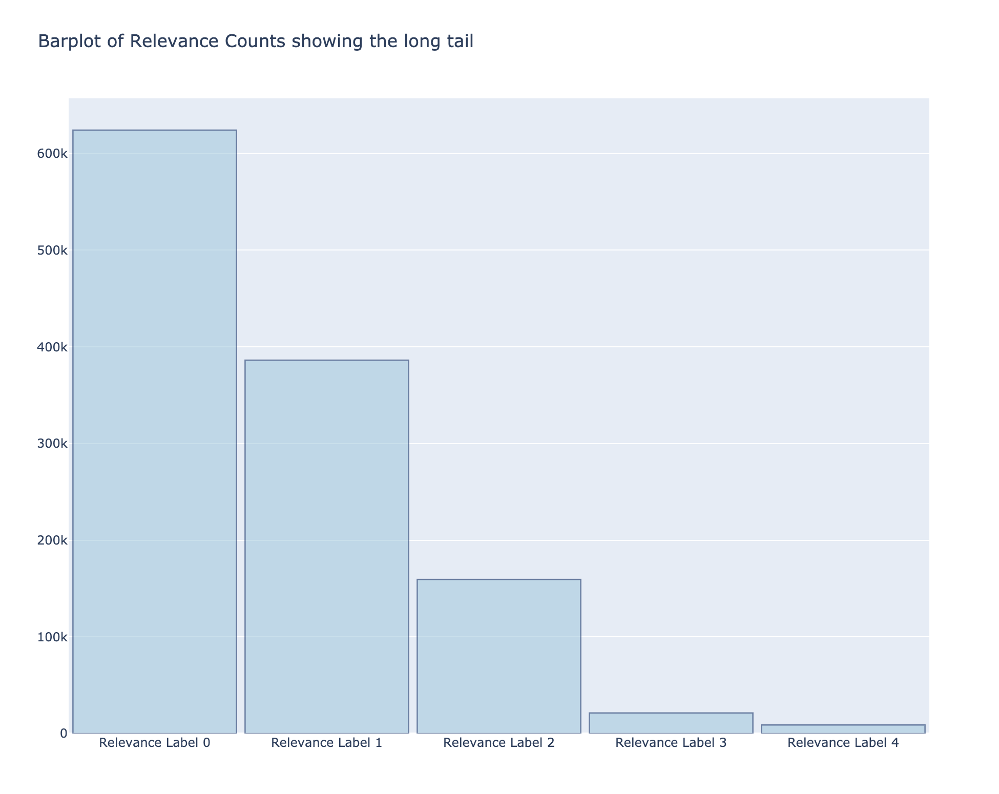
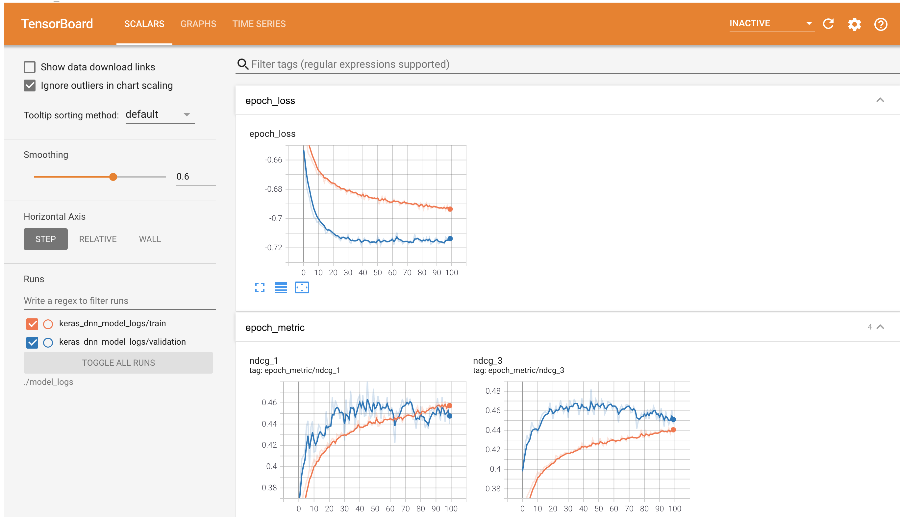
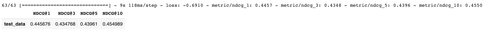
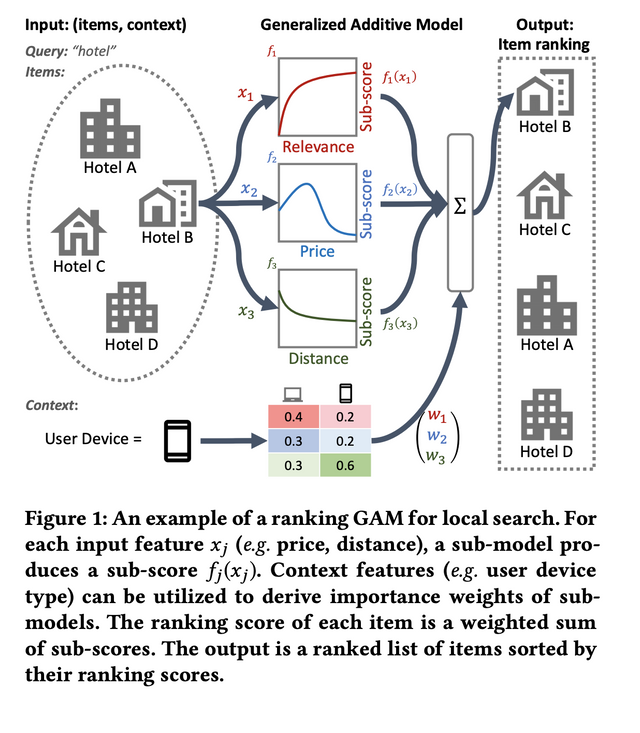

Learning To Rank
Exploring Ranking Models for the Microsoft Web-10K Dataset
The following code was written in the process for a Machine Learning Engineer position I was interviewing for at the time. I received quite a good feedback given this was my first crack at working on learning to rank problems. So I decided to refine and expand it into a notebook for showcasing my experience with Classical and Neural Ranking methods and related frameworks.
This notebook will evaluate a search academic dataset built using common learn-to-rank features, build a ranking model using the dataset, and discuss how additional features could be used and how they would impact the performance of the model.
Steps:
- Imports
- Download the dataset to the notebook
- Preprocess and evaluate the dataset
- Build ranking models
- Evaluate your ranking models
- Discuss the performance and why/when to choose a model.
- Discussion questions
1) Imports
# Import dependencies here
import io
import os
import sys
import subprocess
import requests
import hashlib
from zipfile import ZipFile
import time
import datetime
import numpy as np
import pandas as pd
import lightgbm as lgbm
from requests.exceptions import RequestException, Timeout
from sklearn.datasets import load_svmlight_file
import numpy as np
import matplotlib.pyplot as plt
# TF related deps (might require notebook runtime restart)
print("Installing/updating Dependancies TF & TF Ranking\n")
try:
import tensorflow_ranking as tfr
import tensorflow as tf
print(
f"""
Loaded TensorFlow, version:{tf.__version__}
Loaded TF Ranking, version:{tfr.__version__}
""")
except ImportError:
!pip install -q tensorflow
!pip install -q tensorflow_ranking
import tensorflow_ranking as tfr
import tensorflow as tf
print(f"""
Loaded TensorFlow, version:{tf.__version__}
Loaded TF Ranking, version:{tfr.__version__}
""")
except Exception as e:
print(e)
from tensorflow_serving.apis import input_pb2
# This is needed for tensorboard compatibility.
!pip uninstall -q -y grpcio
!pip install -q grpcio==1.32.0
2) Downloading Dataset
if running in colab, run once per session. (re-running will avoid re-download, unless specified)
# The dataset is located at
# https://storage.googleapis.com/personalization-takehome/MSLR-WEB10K.zip
# You can read about the features included in the dataset here:
# https://www.microsoft.com/en-us/research/project/mslr/
def fetch_mslr_dataset(url, save_path, extract=False, redownload=False):
'''
Function to download dataset.
Reduces time/processing by verifying if the file in url is available in the
current runtime (colab/local) and if not, downloads file to disk
@args:
url: str
save_path: str
extract: bool
redownload: bool
@returns:
path: str
( path to the location of downloaded file )
'''
save_path = os.path.abspath(save_path) # full path
file_name = os.path.basename(url) # i.e. MSLR-WEB10K.zip
# checking if folder is valid
assert os.path.isdir(save_path) == True, '''Given path does not exist.
Make sure path is correct (abs path will be used)'''
ret_path = f"{save_path}/{file_name}" # setting destination
# Caching / Reducing redundant downloads
# checking if file has been already downloaded in the given folder before.
if file_name in os.listdir(save_path) and redownload is not True:
# Extracting MD5 checksum of the existing file
with open(f"{save_path}/{file_name}",'rb') as f:
f_md5 = hashlib.md5(f.read())
# Fetching only the checksum of the remote file on the url
remote_file_md5 = requests.head(dataset_url).headers['Etag'][1:-1]
# Making sure the MD5 checksum matches the one given in url.
if f_md5.hexdigest() == remote_file_md5:
print(
f"{save_path}' already contains the correct download file ",
f"- ({file_name}). [Verified]")
else:
print(
"""
The zip file already exists at the location but could not be
verified as the correct file via MD5 check.
Please check if you have the correct file
or pass `redownload=True` to the function
""")
else:
subprocess.run(['rm','-rf', f'{ret_path}'], check=True)
# Try fetching file from url
try:
req = requests.get(url, stream=True)
except TimeoutError:
print("Something went wrong and the Connection has timed out. Please retry")
except RequestException:
SystemExit(e)
# save to specified location.
with open(f"{ret_path}", mode='wb') as z:
z.write(req.content)
print(f"Zip Download complete! - the file is stored at {ret_path}")
if extract:
print("Extracting . . .")
try:
# Using Unzip from the cmd-line
proc = subprocess.run(
["unzip", f"{ret_path}", "-d", f"{ret_path[:-4]}"], check=True)
# Python based decompression
# slower compared to using the linux unzip
# with ZipFile(f"{ret_path}",'r') as zfile:
# zfile.extractall(path=f"{ret_path[:-4]}")
except Exception as e:
print(e)
print(f"""Finished !
Extracted contents are in {ret_path[:-4]}
""")
return ret_path[:-4]
else:
return ret_path
# Downloading / verifying dataset using the function above
dataset_url = "https://storage.googleapis.com/personalization-takehome/MSLR-WEB10K.zip"
# downloading and extracting to this colab notebook's base dir
dataset_folder_path = fetch_mslr_dataset(dataset_url, '.', extract=True)
# dataset_folder_path="/content/drive/MyDrive/MSLR-WEB10K"
Extracting . . .
Finished !
Extracted contents are in /content/drive/MyDrive/MSLR-WEB10K
note: if you already have the dataset and want to bypass the download to run the cells below
then replace dataset_folder_path var with the str path to the uncompressed MSLR folder
3) Preprocess & evaluate the dataset
# Preprocess and evaluate the dataset
def parse_mslr_dataset_line(line, map_fn_over_feature=None):
"""
Compact Function to parse a single line from MSLR dataset txt file.
@args:
line: str
map_fn_over_features: fucntion to map over the extracted features
@returns:
Tuple[rel, qid, List[features]]
"""
# Clean and split into array
tokens = line.strip("\n").strip(" ").split(" ")
# Lambda to parse out the val for qid
extr_fn = lambda x: x.split(":")[-1]
if map_fn_over_features is None:
feat_fn = lambda x: str(x)
else:
feat_fn = map_fn_over_features
# one-liner to extract and assign relevance, qid and features
rel, qid, *features = \
[int(extr_fn(c)) if idx < 2 else feat_fn(c) for idx, c in enumerate(tokens)]
return rel, qid, features
import numpy as np
def convert2libsvm(input_file, output_path, map_fn=None):
"""
Function to convert MSLR txt files in to LibSVM format for LightGBM
@args:
input_file: str
save_path: str
@returns:
path: str
( path to the location of downloaded file )
"""
if not os.path.isdir(output_path):
os.mkdir(output_path)
#opening file readers
filename = os.path.basename(input_file)
out_features = open(f"{output_path}/{filename[:-4]}.libsvm","w")
out_query = open(f"{output_path}/{filename[:-4]}.query","w")
curr_qid = -1
doc_cnt = 0
# Defining fns to transform parsed lines
split_fn = lambda x: x.split(':')
if map_fn:
func = lambda x: np.log1p(np.abs(float(x))*np.sign(float(x)))
else:
func = lambda x: float(x)
# iterating line-by-line
for line in open(f"{input_file}" ,"r"):
r, qid, features = parse_mslr_dataset_line(line=line,
map_fn_over_features=split_fn)
features = [f"{id}:{func(float(val))}" for id,val in features]
if curr_qid != qid:
if doc_cnt > 0:
out_query.write(''.join([str(doc_cnt),"\n"]))
curr_qid, doc_cnt = qid, 0
doc_cnt += 1
f = [str(r)] + features + ["\n"]
out_features.write(' '.join(f))
out_query.write(' '.join([str(doc_cnt),"\n"]))
out_features.close()
out_query.close()
I wrote above functions while I was exploring the original dataset and wanted to ensure that I had complete control and transparency over how each row would be parsed and manipulated. For trial this made more sense than using factory/pre-built functions that would have abstraced away the processing and possibly slowed down my thinking/analysis.
But for repeated running, the data and its intermediate forms do not need to be saved to disk and one can use functions like
sklearn.datasets.load_svmlight_fileto load small datasets in memory directly. I refrained from using this until I knew exactly how everything was parsed/used.Yet, the reason I decided to include these functions was because they help in understanding the underlying structure of the dataset or tracking the data-flow & were especially helpful for me when I had to tackle issues downstream like translating & saving them into other forms compatible with other libs such as Protobufs for with TFrecords to use with TF-Ranking.
# loading MSLR fold txt files
train = load_svmlight_file(f"{dataset_folder_path}/Fold1/train.txt", query_id=True)
valid = load_svmlight_file(f"{dataset_folder_path}/Fold1/vali.txt", query_id=True)
test = load_svmlight_file(f"{dataset_folder_path}/Fold1/test.txt", query_id=True)
Combining Query and Labels across all 3 partitions and Exploring Query & Label related statistics for the whole dataset
(10K queries & 1.2 Mil Docs)
all_labels = np.concatenate(
(train[1],valid[1],test[1]),axis=0)
all_qids = np.concatenate(
(train[2],valid[2],test[2]),axis=0)
Many LTR research papers cite that most relevance labelings in ranking datasets are typically skewed/long-tailed; this also seems to be reflected in the barplot below as well as the metrics calculated afterwards.
# plotting the count of lables as a barplot
labels_ids, l_counts = np.unique(all_labels, return_counts=True)
import plotly.graph_objects as go
fig = go.Figure([go.Bar(x=[f"Relevance Label {int(i)}" for i in labels_ids],
y=l_counts,
width=[0.95 for i in range(5)])],
)
fig.update_traces(marker_color='rgb(158,202,225)', marker_line_color='rgb(8,48,107)',
marker_line_width=1.25, opacity=0.6)
fig.update_layout(title_text='Barplot of Relevance Counts showing the long tail',
width=1000,
height=800,)
fig.show()

The above barplot confirms that most query-document pairs have the lowest relevance rating of 0 and the no. of docs taper off as relevance increases.
We can also compute the number of queries with no relevant docs i.e. on 0 labeled docs
qids_with_only_zero_relevance = [q for q in np.unique(all_qids) if np.sum(all_labels[all_qids == q]) == 0]
print(f"No of Queries with only 0 relevant docs = {len(qids_with_only_zero_relevance)}")
No of Queries with only 0 relevant docs = 315
Following metrics help in understanding the relevancy distribution further
LR % - Ratio of documents with 0-relevancy to total number of documents in the dataset
LR = np.sum(all_labels == 0) / all_labels.shape[0]
Max documents per Query - MDQ
( may be useful for setting list_size for Listwise LTR methods where examples are truncated or padded according to the given value)
np.max(np.bincount(all_qids))
ALRPQ (%) - average ratio of the number of documents having the lowest rating per query over the no. of documents per query
query_ids, q_counts = np.unique(all_qids, return_counts=True)
LRPQ = [np.sum(all_labels[all_qids==i]==0)/j for i,j in zip(query_ids,q_counts)]
ALRPQ = np.average(LRPQ)
ALRPQ
0.5599329113587544
| Global Statistics | MSLR-WEB10K. |
|---|---|
| No. of Queries | 10,000 |
| No. of Documents | 1,200,192 |
| LR (%) | 0.52013 |
| Max Docs/Query (MDQ %) | 908 |
| ALRPQ (%) | 0.559932 |
While inspecting implementations and research papers, I learned that widely-used open-source libraries for all types of state-of-the-art ranking models can have slightly different evaluation settings, especially regarding documents with 0 ratings, i.e If all the documents in a query have the lowest rating of 0, certain normalised metrics are implemented differently to handle such a case.
e.g. LightGBM implementation of nDCG, which assigns nDCG score equal to 1
to queries with no relevant documents.
If the number of queries with all 0 labels is large as is in this case, these evaluation choices can create discrepancies in analysis of the models.
While I wont be removing any such queries, I still think its worthwhile to be cognizant of this detail as it might help in debugging in certain scenarios
Navigational & Informational behavior [User Dynamics information]
Ferro et. al. in their work propose a simple observation that the user behavior in visiting a search engine result page differs depending on the query type as well as the number and position of the relevant results.
-
For example, it is likely that on a page with a single highly relevant result in its first position the user assumes a navigational behavior,
-
While a page with several relevant results may likely correspond to an informational scenario, where a more complex search result page visiting behavior can be observed.
The paper classifies queries as navigational or informational based on the following criterion:
a query is considered as navigational if it contains only one result with relevance label ≥ 3.
# computing navigations queries
def get_nav_and_inf_stats(labels, queries):
unique_q = np.unique(queries)
navigational = sum([ 1 if sum(labels[queries == q] > 2) == 1 else 0
for q in unique_q])
informational = unique_q.shape[0] - navigational
return navigational, informational
get_nav_and_inf_stats(all_labels,all_qids)
(1456, 8544)
| MSLR-WEB10K {S1,S2,S3,S4,S5} | Counts |
|---|---|
| No. of Navigational Queries | 1456 |
| No. of Informationsal Queries | 8544 |
The above statistics show that about ~15% of the queries in the dataset have only one strong relevancy label i.e Navigational.
My thinking is that this shows that there are certain scenarios where learning to rank models may find this "relevance sparsity" harder to optimize, but this is just an early opinion and I have decided not to invest time in exploring this aspect and therefore will not be leveraging this for anything other than for informative purposes.
As far as I have seen, most research revolving around LTR or all the models that have used MSLR WEB10K or its bigger variant MSLR WEB30K in their performance benchmarks have described minimal to almost no processing w.r.t. feature transformation/scaling - only a few mention elimination of 0 relevancy docs in their respective special cases. Most of them focus on controlling queries or the amount of documents per query or for list wise and group wise methods, comparing the effects of those parameters but not changing any features of the dataset itself.
Therefore although I chose not to apply any preprocessing/feature engineering techinques on the dataset in a generatlistic way, in the following section I explore and employ pre-processing, storage and recently discovered feature transformation techniques specific to the tools and family of Neural Ranking models in order to acquire significant performance uplifts compared to original baselines.
4) Building ranking model
# Build ranking model
Due to Computational & Storage Limitations, all the Neural Ranking work in this and following section was done using only the Fold-1 of the Dataset
4.1) Protobufs, TFRecords & DataSet Preprocessing Protobuffers are extensible structures suitable for storing data in a serialized format, either locally or in a distributed manner. TF ranking has a couple of pre-defined protobufs such as ELWC which make it easier to integrate and formalize data ingestion into the ranking pipeline
Protocol buffers and the tf.data API is a set of utilities that provide a mechanism to read and store data for efficient loading and preprocessing in a way that's fast and scalable.
Given the managable dataset size and goal of building a listwise/groupwise neural LTR model & to showcase advantages over traditional methods and give a proof-of-concept, I could have stuck using a given example and load the Libsvm style data in memory in the input_fn to build the Ranking estimator. But this is not the recomended way nor does it allow us to use the TF-ranking library's functionality to full capacities.
Note: Among other advantages an additional one has been the ability to use compression on TFrecords and then directly use the compressed datasets in the models with minimal performance overhead.
( Uncompressed Fold1 = ~1.2 GB) vs ( Fold1 Compressed ELWC proto TFrecord = ~ 500MB) (https://www.tensorflow.org/guide/data_performance)
# Class I wrote to organize code resposible for parsing MSLR data and
# creating compressed TF-Records in ELWC protobuf format so that they used by
# most rankers in TF-Ranking and be compatible with future rankers or new methods
class LibsvmToELWCProto():
""" Class to parse LibSVM ranking datasets in ELWC proto TFRecords"""
def __init__(self, dir:str=".", use_compression:bool=False):
assert isinstance(dir,str)
if not os.path.isdir(dir):
os.mkdir(dir)
self.input_path = dir
assert isinstance(use_compression,bool)
self.compress = use_compression
if self.compress:
self.compress_type = 'GZIP'
else:
self.compress_type = None
# Helper functions (see also https://www.tensorflow.org/tutorials/load_data/tf_records)
def _bytes_feature(self,value_list):
"""Returns a bytes_list from a string / byte."""
if isinstance(value_list, type(tf.constant(0))):
value_list = value_list.numpy()
return tf.train.Feature(bytes_list=tf.train.BytesList(value=[value_list]))
def _float_feature(self,value_list):
"""Returns a float_list from a float / double."""
return tf.train.Feature(float_list=tf.train.FloatList(value=[value_list]))
def _int64_feature(self,value_list):
"""Returns an int64_list from a bool / enum / int / uint."""
return tf.train.Feature(int64_list=tf.train.Int64List(value=[value_list]))
def read_and_print_topn_tfrecord(self, target_filename, num_of_examples_to_read):
filenames = [target_filename]
tf_record_dataset = tf.data.TFRecordDataset(filenames,
compression_type=self.compress_type)
for raw_record in tf_record_dataset.take(num_of_examples_to_read):
example_list_with_context = input_pb2.ExampleListWithContext()
example_list_with_context.ParseFromString(raw_record.numpy())
print(example_list_with_context)
def libsvmfile_to_TFrecord(self, input_libsvm, file_name=None):
"""
for reading and converting directly from files too large to hold
in memory
IMPORTANT
Assumes that rows in dataset are sorted/grouped by qid
Parses each row line by line to construct and tf.train.Example
with ELWC proto format.
I have a general purpose tfRecord parser for any LibSVM as well
but it is slower and can consume more memrory.
"""
if file_name is None:
file_name = os.path.basename(input_libsvm).split(".")[0]
if self.compress:
print('Using GZIP compression for writing ELWC TFRecord Dataset')
opts = tf.io.TFRecordOptions(compression_type = self.compress_type)
file_name = f"{file_name}_gzip_compressed"
save_path = f"{self.input_path}/{file_name}"
with tf.io.TFRecordWriter(f"{save_path}.tfrecords",
options=opts) as writer:
ELWC = input_pb2.ExampleListWithContext()
map_fn = lambda x: tuple(x.split(":"))
prev_qid = None
for line in open(f"{input_libsvm}" ,"r"):
r, qid, features = parse_mslr_dataset_line(line=line,
map_fn_over_features=map_fn)
feature_rel_list = features + [("rel",int(r))]
example_proto_dict = {
f"{f_n}":(
self._int64_feature(f_v) if f_n == "rel"
else self._float_feature(float(f_v))
)
for (f_n, f_v) in feature_rel_list
}
example_proto = tf.train.Example(
features=tf.train.Features(feature=example_proto_dict))
if int(qid) != prev_qid:
if prev_qid is not None:
writer.write(ELWC.SerializeToString())
prev_qid = qid
ELWC = input_pb2.ExampleListWithContext()
ELWC.examples.append(example_proto)
else:
ELWC.examples.append(example_proto)
# final write for the last query grp
writer.write(ELWC.SerializeToString())
def array_to_TFrecord(self, input_array, file_name):
"""
"""
file_name = os.path.basename(file_name)
if self.compress:
print('Using GZIP compression for writing ELWC TFRecord Dataset')
opts = tf.io.TFRecordOptions(compression_type = self.compress_type)
file_name = f"{file_name}.gzipped_tfrecord"
else:
file_name = f"{file_name}.tfrecord"
save_path = f"{self.input_path}/{file_name}"
with tf.io.TFRecordWriter(f"{save_path}", options=opts) as writer:
ELWC = input_pb2.ExampleListWithContext()
prev_qid = None
for i in range(input_array.shape[0]):
r, qid, features = input_array[i,0],input_array[i,1],input_array[i,2:]
example_proto_dict = {
f"{f_n+1}":self._float_feature((f_v))
for (f_n, f_v) in enumerate(features)
}
example_proto_dict['rel'] = self._int64_feature(int(r))
example_proto = tf.train.Example(
features=tf.train.Features(feature=example_proto_dict))
if int(qid) != prev_qid:
if prev_qid is not None:
writer.write(ELWC.SerializeToString())
prev_qid = qid
ELWC = input_pb2.ExampleListWithContext()
ELWC.examples.append(example_proto)
else:
ELWC.examples.append(example_proto)
# final write for the last query grp
writer.write(ELWC.SerializeToString())
trainset_with_labels = np.concatenate((np.expand_dims(train[1],axis=1),np.expand_dims(train[2],axis=1),train[0].toarray()),axis=1)
validset_with_labels = np.concatenate((np.expand_dims(valid[1],axis=1),np.expand_dims(valid[2],axis=1),valid[0].toarray()),axis=1)
testset_with_labels = np.concatenate((np.expand_dims(test[1],axis=1) ,np.expand_dims(test[2],axis=1),test[0].toarray()),axis=1)
#-----------------------------------------------------------------------------
ELWC_converter = LibsvmToELWCProto(dir ="./mslr-web-10k-tfrecords",
use_compression=True)
ELWC_converter.array_to_TFrecord(trainset_with_labels,"train-fold1")
ELWC_converter.array_to_TFrecord(validset_with_labels,"vali-fold1")
ELWC_converter.array_to_TFrecord(trainset_with_labels,'test-fold1')
The conversion from LibSVM to TFrecord can be time consuming. I have written 2 functions for writing tf records for large libsvm files as well as in memory numpy arrays. (
libsvm_to_TFRecord & array_to_TFRecord)For the the purposes of running this notebook I have not used my
libsvm_to_TFRecordfn which is the memory efficient one as it takes more time. But it should be noted that I experienced colab crashes for the in-memory array version probably since converting each query group into an ELWC object can drastically increase memory usage & cause Out of memory (OOM) issuesWeighing the pros and initial time-related cons, I decided to use ELWC TFrecords as I felt it made the code & the data more conducive to experimentation & more flexible to be integrated and used with various existing pipelines
Note: Processing will take ~20mins for each fold i.e 3 files
Feature Augmentation with The Log1p Trick
Continuing from the observations I made in the preprocessing section, not a lot of focus has been given towards Data Augmentation and Feature Transformation in LTR, which was surprising to me given how useful they have been for neural methods in other fields.
Neural networks, are known to be sensitive to input feature transformations/data scale. Tree-based models - which have been leading in most standard public numerical LTR datasets - on the other hand, are effective at partitioning feature space and experience less sensitivity to scaling.
Until recently, from what I could gather, no effective feature transformation work has been done addressing this issue. Though quite recently papers published by Qin et al. and H Zhuang et al., discovered that certain transformations might help. Particularly, a simple “log1p” symmetric transformation, which they applied to WEB30K and Istella datasets worked well and seemed to improve performance noticeably. Therefore I have employed the same feature transformation as a pre-processing measure for this dataset
4.2) Neural LTR model After Experimenting with different user journeys offered in the TF-ranking library, I decided to use their new Keras API after using the Estimator API as I believed it would help me prototype, iterate and experiment changes in my model faster in a notebook environment.
Plus after the model is developed it can easily be exported as an Estimator to be compatible with existing production functionality.
# Store the paths to files containing training and test instances.
_TRAIN_DATA_PATH = f"{dataset_folder_path}/train-fold1.gzip_tfrecord"
_VALID_DATA_PATH = f"{dataset_folder_path}/vali-fold1.gzip_tfrecord"
_TEST_DATA_PATH = f"{dataset_folder_path}/test-fold1.gzip_tfrecord"
# The maximum number of documents per query in the dataset.
# Document lists are padded or truncated to this size.
_LIST_SIZE = 200
# The document relevance label.
_LABEL_FEATURE_NAME = "rel"
_NUM_FEATURES = 136
# Padding labels are set negative so that the corresponding examples can be
# ignored in loss and metrics.
_PADDING_LABEL = -1
# Learning rate for optimizer.
_LEARNING_RATE = 0.05
# Parameters to the scoring function.
_BATCH_SIZE = 128
_DROPOUT_RATE = 0.5
# Location of model directory and number of training steps.
_MODEL_DIR = f"./model_logs/model_{datetime.datetime.now().strftime('%m-%d-%Y_%H-%M-%S')}"
# setting as shell env for tensorboard stuff
os.environ["models_dir"] = _MODEL_DIR
Defining feature_spec fn as per cols in the ELWC tfrecords that I previously generated from LibSVM
def create_feature_columns():
# We dont have context featuresin MSLR datasets
context_feature_columns = {}
feature_names = ["{}".format(i + 1) for i in range(_NUM_FEATURES)]
example_feature_columns = {
name:
tf.feature_column.numeric_column(name, shape=(1,), default_value=0.0)
for name in feature_names}
return context_feature_columns, example_feature_columns
Creating a TFRecordDataset and using Feature Transformations
The function below parses in the compressed TFRecord during training and transforms
the input values using the symmetric log1p transformation I mentioned before.
def create_dataset_from_tfrecords(input_path:str,
batch_sz:int,
shuffle:bool = True,
num_epochs:int = None,
data_format:str = "ELWC",
compression_type:str = ''):
context_feature_columns, example_feature_columns = create_feature_columns()
context_feature_spec = tf.feature_column.make_parse_example_spec(
context_feature_columns.values())
label_column = tf.feature_column.numeric_column(
_LABEL_FEATURE_NAME, dtype=tf.int64, default_value=_PADDING_LABEL)
example_feature_spec = tf.feature_column.make_parse_example_spec(
list(example_feature_columns.values()) + [label_column])
_reader_arg_list = []
if compression_type:
assert compression_type in ["", "GZIP","ZLIB"]
_reader_arg_list = [compression_type]
dataset = tfr.data.build_ranking_dataset(
file_pattern=input_path,
data_format=tfr.data.ELWC,
batch_size=batch_sz,
list_size=_LIST_SIZE,
context_feature_spec=context_feature_spec,
example_feature_spec=example_feature_spec,
reader=tf.data.TFRecordDataset,
reader_args= _reader_arg_list,
shuffle=shuffle,
num_epochs=num_epochs,
)
def _log1p_transform(features):
'''computes elementwise log_e(|x|)*sign(x) '''
transformed_feats = {
f:tf.math.multiply(
tf.math.log1p(
tf.math.abs(features[f])
),
tf.math.sign(features[f])
)
for f in features}
return transformed_feats
def _split_label_and_transform_features(features):
label = tf.squeeze(features.pop(_LABEL_FEATURE_NAME), axis=2)
label = tf.cast(label, tf.float32)
features = _log1p_transform(features)
return features, label
dataset = dataset.map(_split_label_and_transform_features)
return dataset
My experience with results were quite surprising. The simple transformation can yield 3-4% performance improvement even on a FFNN ranker. The paper and other ones from the same group also suggest adding Random Gaussian Noise when the model capacity is sufficently augmented i.e using more complex architectures. The goal of this notebook was creating a Proof-of-concept ranking model rather than achieving state-of-the-art results, thus I opted not to use it as the ranker is not deep/complex and the authors showed degradation with adding noise to models without sufficient training and size.
Defining the scoring fn which currently will be a standard DNN
context_feature_columns, example_feature_columns = create_feature_columns()
# Using a Canned Network
ranking_network = tfr.keras.canned.DNNRankingNetwork(
context_feature_columns=context_feature_columns,
example_feature_columns=example_feature_columns,
hidden_layer_dims=[1024, 512, 256],
activation=tf.nn.relu,
dropout=_DROPOUT_RATE,
use_batch_norm=True,
batch_norm_moment=0.4)
_loss_obj = tfr.keras.losses.get(
tfr.losses.RankingLossKey.GUMBEL_APPROX_NDCG_LOSS)
# Contains all ranking metrics, including NDCG @ {1, 3, 5, 10}.
def _make_eval_metric_fns():
"""Returns a list of ranking metrics for the keras ranker"""
metric_fns = [tfr.keras.metrics.get(**kwargs)
for kwargs in [dict(key="ndcg", topn=topn,
name="metric/ndcg_{}".format(topn))
for topn in [1, 3, 5, 10]]
]
return metric_fns
default_metrics = _make_eval_metric_fns()
config = tf.estimator.RunConfig(
model_dir=_MODEL_DIR,
keep_checkpoint_max=10,
save_checkpoints_secs=200)
# Build ranker as a Functional Keras model.
ranker = tfr.keras.model.create_keras_model(
network=ranking_network,
loss=_loss_obj,
metrics=default_metrics,
optimizer=tf.keras.optimizers.Adagrad(learning_rate=_LEARNING_RATE),
size_feature_name=None)
NOTE: Run the TensorBoard cell before & refresh it if you want to track progress during training run
assert tf.test.gpu_device_name() != '', "GPU not detected, training is much faster GPU/TPU instance of colab"
train_dataset = create_dataset_from_tfrecords(_TRAIN_DATA_PATH,
_BATCH_SIZE,
compression_type="GZIP")
vali_dataset = create_dataset_from_tfrecords(_VALID_DATA_PATH,
_BATCH_SIZE,
shuffle=False,
num_epochs=1,
compression_type="GZIP")
tensorboard_callback = tf.keras.callbacks.TensorBoard(_MODEL_DIR)
ranker.fit(train_dataset,
validation_data=vali_dataset,
steps_per_epoch=100,
epochs=100,
validation_steps=1,
callbacks=[tensorboard_callback])
. . .
Epoch 95/100
100/100 [==============================] - 44s 447ms/step - loss: -0.6896 - metric/ndcg_1: 0.4489 - metric/ndcg_3: 0.4326 - metric/ndcg_5: 0.4358 - metric/ndcg_10: 0.4517 - val_loss: -0.7122 - val_metric/ndcg_1: 0.4327 - val_metric/ndcg_3: 0.4387 - val_metric/ndcg_5: 0.4604 - val_metric/ndcg_10: 0.4865
Epoch 96/100
100/100 [==============================] - 44s 438ms/step - loss: -0.6906 - metric/ndcg_1: 0.4499 - metric/ndcg_3: 0.4324 - metric/ndcg_5: 0.4358 - metric/ndcg_10: 0.4534 - val_loss: -0.7148 - val_metric/ndcg_1: 0.4334 - val_metric/ndcg_3: 0.4510 - val_metric/ndcg_5: 0.4713 - val_metric/ndcg_10: 0.4982
Epoch 96/100
100/100 [==============================] - 44s 443ms/step - loss: -0.6915 - metric/ndcg_1: 0.4501 - metric/ndcg_3: 0.4358 - metric/ndcg_5: 0.4388 - metric/ndcg_10: 0.4544 - val_loss: -0.7148 - val_metric/ndcg_1: 0.4159 - val_metric/ndcg_3: 0.4513 - val_metric/ndcg_5: 0.4737 - val_metric/ndcg_10: 0.4982
Epoch 98/100
100/100 [==============================] - 45s 447ms/step - loss: -0.6869 - metric/ndcg_1: 0.4498 - metric/ndcg_3: 0.4306 - metric/ndcg_5: 0.4327 - metric/ndcg_10: 0.4495 - val_loss: -0.7132 - val_metric/ndcg_1: 0.4539 - val_metric/ndcg_3: 0.4385 - val_metric/ndcg_5: 0.4716 - val_metric/ndcg_10: 0.4950
Epoch 99/100
100/100 [==============================] - 44s 439ms/step - loss: -0.6914 - metric/ndcg_1: 0.4509 - metric/ndcg_3: 0.4312 - metric/ndcg_5: 0.4350 - metric/ndcg_10: 0.4521 - val_loss: -0.7129 - val_metric/ndcg_1: 0.4548 - val_metric/ndcg_3: 0.4512 - val_metric/ndcg_5: 0.4683 - val_metric/ndcg_10: 0.4932
Epoch 100/100
100/100 [============================>] - 44s 439ms/step - loss: -0.6913 - metric/ndcg_1: 0.4511 - metric/ndcg_3: 0.4331 - metric/ndcg_5: 0.4373 - metric/ndcg_10: 0.4542
5) Evaluate model performance
%load_ext tensorboard
%tensorboard --logdir=./model_logs --port 25952
The tensorboard extension is already loaded. To reload it, use:
%reload_ext tensorboard
<IPython.core.display.Javascript object>

The plots indicate a steady decline in training and validation loss and a consequent increase in metrics per epoch with only NDCG@1 showing some saturation, which suggests to me that the network can be trained for longer steps.
test_dataset = create_dataset_from_tfrecords(_TEST_DATA_PATH,32,
num_epochs=1,
shuffle=False,
compression_type="GZIP")
loss, *metrics = ranker.evaluate(test_dataset)
pd.DataFrame(data = [metrics], columns=[f'NDCG@{k}' for k in [1,3,5,10]], index=['test_data'])

Considering the straightforward DNN implementation of the ranker and the short training time/steps, an NDCG@1 of 0.44 is quite good from what I have seen in research starting from a couple of years & tracks with the changes/improvements. Though the NDCG@10 is a bit lower.
In the next section I evaluate and discuss the tuning that I think helped me get this performance.
After constructing the basic pipeline of the model, I dedicated some time to understand the underpinings of neural based ranking models. During my research for this notebook, I came across several frameworks, techniques and best practices that allowed me to attain significant improvements to baseline performance on DNN
In this section I note some hyperparameter tuning and optimizations that I've alluded to before, which allowed me to get quite decent uplifts even in the scope of creating a baseline showcase ranking model.
Once the initial skeleton of the ranking pipeline was set up, I ran consecutive experiments to tune the standard hyperparameters of the network such as
hidden neuron dims, depth, batch size, learning_rate, iterations, dropoutetc. in a grid search fashion to find an optimal balance between expected performance and fastest stable training times.
-
Tried variours layer sizes from [3,4,5,6] & hidden dims ranging from 32 all the way upto 2048 to increase network capacity and leverage higher order interactions
(though some papers I later saw suggested DNNs might not be as great at that as previously thought) -
Varied batch size for training and validation to see effect on training speed & stability. After a few runs a higher batch size expectedly resulted in slower training
(450ms/step for 128)vs(129ms/step for 32)but also resulted in more stable & better training results. (Could also be affected by underlying gpu hardware optimization aspects) -
Tried various learning rates and dropout values. Though ultimately settled on the usual choice of
0.05 with AdaGrad for lr and 0.5 for Dropoutrespectively
My main motivation for doing was this to get a quick ranking model up and running that I could further probe and tune for more specific ranking oriented aspects. The current setup with TFranking allowed me to check performance and stability of various ranking losses, List Size for listwise training, various activation functions (like swish which has shown promise in CV research) and specific feature transformations. I also tried to do small ad-hoc ablation studies to ascertain differences to see which combination could get me good results within reasonable compute and time. The following changes/decisions gave good results with relatively low to zero implementation efforts
-
Since Listwise methods were my main focus I did not try any pointwise or pairwise losses. Among the most used, I tried
ApproxNDCG,Softmaxand certain variations. Literature suggests SoftmaxCrossEntropy loss (softmax) as a simple and stable choice so thats where I started but foundGumbelApproxNDCGloss - a variation of stochastic treatment that adds gumbel noise - to perform better for me. -
List size was another parameter, which I set to 200 based on various settings I saw in different papers by the TF-ranking team.
-
BatchNorm momentum was also reduced from 0.9 to 0.4
-
But most importantly, taking cues from papers published by [H Zhuang et. al.] & [Qin et al.] which suggested feature transformations such as Log1p or Gauss Noise injection was quite helpful. The simple log1p transformation that I implemented yielded noticeable uplifts. Gauss norm was not employed as the authors showed degradation with feed-forward DNNs.
The final pipeline consists of an input parser, ranking datatset creater and Neural Network - comprised of three dense layers with BatchNorm and Relu after each layer - which is fitted into a ranking head with the mentioned loss and NDCG@k=1,3,5,10 as metrics.
6) Discussion:
- Why choose NDCD metric to evaluate the model?
- How well did the models perform?
- Further Improvements and Ideas
nDCG - Normalized Discounted Cumulative Gain is the de-facto choice of metric when dealing with graded measures, which also consider the ranking among relevant items, which is the case in MSLR-WEB10K dataset.
In addition a lot of time and research has gone into developing approximations, loss functions and frameworks which directly try to optimize and learn ranking functions or models for achieving better NDCG. This means that there is a good ecosystem of tools that are tightly coupled with the metric which makes make it an optimal choice
Discounted Cumulative gain is calculated as:
$$ DCG@k = \sum_{i=1}^{k} \frac{2^{l_i} - 1}{log_2(i+1)} $$
where \(l_i\) is the grading of relevance at rank \(i\)
Going through the formula, intuitively the numerator is function that is directly proportional to increasing relevance which is called gain. The denominator is a decreasing function of position, which is the discount component. Highly relevant documents are more useful than moderately relevant documents, which are in turn more useful than irrelevant documents while being in the right position. So a higher relevance nets more gain but is penalised if placed on lower positions. The metric promotes higher relevant items to be ranked higher which is a property that is desirable.
Normalized DCG is then just:
where IDCG is the ideal DCG obtained if a perfect ranking was observed.
For quite some time, Neural Ranking Methods while getting focus have not been competitive with Gradient Boosted Tree models such as LambdaMART on numerical datasets.
In this section, to get a better understanding of the pros and cons of using a neural method over DT, I trained a LambdaMart model using the LightGBM library, which until recently was regarded as - or arguably still is - state-of-the-art for datasets containing dense numerical features such as MSLR.
- LambdaMART LTR Model
def run_lambdamart(dataset_path, fold):
train = load_svmlight_file(f"{dataset_path}/Fold{fold}/train.txt", query_id=True)
valid = load_svmlight_file(f"{dataset_path}/Fold{fold}/vali.txt", query_id=True)
training_data = lgbm.Dataset(train[0])
validation_data = lgbm.Dataset(valid[0])
# Setting group info
training_data = lgbm.Dataset(data=train[0],label=train[1])
validation_data = lgbm.Dataset(data=valid[0],label=valid[1])
training_data.set_group(np.unique(train[2], return_counts=True)[1])
validation_data.set_group(np.unique(valid[2], return_counts=True)[1])
# Setting prarams
params = {
"task": "train",
"num_leaves": 255,
"min_data_in_leaf": 0,
"min_sum_hessian_in_leaf":100,
"num_threads": 16
}
# Setting Objectives & Learning Rate
params['Objective'] = "rank_xendcg" # Equivalent perf as Lambdarank & Faster
params['learning_rate'] = 0.05
# Setting metrics & eval pts
params['metrics'] = ['ndcg']
params['ndcg_eval_at'] = [1, 3, 5, 10]
results = {}
bt_ltr = lgbm.train(params=params,
train_set=training_data,
valid_sets=[validation_data],valid_names="valid",
num_boost_round=100,
evals_result=results,
verbose_eval=10)
from sklearn.metrics import ndcg_score
test = load_svmlight_file(f"{dataset_path}/Fold{fold}/test.txt", query_id=True)
test_group = np.unique(test[2])
total = []
for i in test_group:
try:
scores = np.expand_dims(bt_ltr.predict(test[0][test[2] == i].toarray()),axis=0)
rel = np.expand_dims(test[1][test[2] == i], axis=0)
total.append(ndcg_score(rel,scores,k=1))
except Exception:
pass
results["test_ndcg"] = np.mean(total)
results[f"fold{fold}_model"] = bt_ltr
return results
all_res={}
for i in range(1,6):
print(f"""
---------------------------
fold{i}""")
all_res[f"fold{i}"] = run_lambdamart("/content/drive/MyDrive/MSLR-WEB10K",i)
---------------------------
fold1
[10] valid's ndcg@1: 0.460571 valid's ndcg@3: 0.452905 valid's ndcg@5: 0.456894 valid's ndcg@10: 0.476716
[20] valid's ndcg@1: 0.473533 valid's ndcg@3: 0.460936 valid's ndcg@5: 0.466069 valid's ndcg@10: 0.484822
[30] valid's ndcg@1: 0.475114 valid's ndcg@3: 0.466228 valid's ndcg@5: 0.472492 valid's ndcg@10: 0.490586
[40] valid's ndcg@1: 0.487319 valid's ndcg@3: 0.47362 valid's ndcg@5: 0.47813 valid's ndcg@10: 0.496846
[50] valid's ndcg@1: 0.494519 valid's ndcg@3: 0.476746 valid's ndcg@5: 0.482407 valid's ndcg@10: 0.501203
[60] valid's ndcg@1: 0.494605 valid's ndcg@3: 0.478599 valid's ndcg@5: 0.485217 valid's ndcg@10: 0.502415
[70] valid's ndcg@1: 0.497724 valid's ndcg@3: 0.482326 valid's ndcg@5: 0.488462 valid's ndcg@10: 0.505793
[80] valid's ndcg@1: 0.49701 valid's ndcg@3: 0.483865 valid's ndcg@5: 0.488244 valid's ndcg@10: 0.506631
[90] valid's ndcg@1: 0.500819 valid's ndcg@3: 0.486319 valid's ndcg@5: 0.491567 valid's ndcg@10: 0.508823
[100] valid's ndcg@1: 0.500795 valid's ndcg@3: 0.487764 valid's ndcg@5: 0.493362 valid's ndcg@10: 0.509696
---------------------------
fold2
[10] valid's ndcg@1: 0.439029 valid's ndcg@3: 0.435994 valid's ndcg@5: 0.442899 valid's ndcg@10: 0.463751
[20] valid's ndcg@1: 0.461929 valid's ndcg@3: 0.450332 valid's ndcg@5: 0.455395 valid's ndcg@10: 0.475256
[30] valid's ndcg@1: 0.457733 valid's ndcg@3: 0.454178 valid's ndcg@5: 0.461606 valid's ndcg@10: 0.482412
[40] valid's ndcg@1: 0.465976 valid's ndcg@3: 0.458331 valid's ndcg@5: 0.466217 valid's ndcg@10: 0.487144
[50] valid's ndcg@1: 0.476119 valid's ndcg@3: 0.464495 valid's ndcg@5: 0.47199 valid's ndcg@10: 0.493111
[60] valid's ndcg@1: 0.479457 valid's ndcg@3: 0.468421 valid's ndcg@5: 0.474527 valid's ndcg@10: 0.496759
[70] valid's ndcg@1: 0.482843 valid's ndcg@3: 0.470047 valid's ndcg@5: 0.476531 valid's ndcg@10: 0.499443
[80] valid's ndcg@1: 0.482552 valid's ndcg@3: 0.472077 valid's ndcg@5: 0.478064 valid's ndcg@10: 0.500665
[90] valid's ndcg@1: 0.480971 valid's ndcg@3: 0.473215 valid's ndcg@5: 0.478395 valid's ndcg@10: 0.501051
[100] valid's ndcg@1: 0.482852 valid's ndcg@3: 0.474521 valid's ndcg@5: 0.481642 valid's ndcg@10: 0.502988
---------------------------
fold3
[10] valid's ndcg@1: 0.449814 valid's ndcg@3: 0.445464 valid's ndcg@5: 0.449102 valid's ndcg@10: 0.467304
[20] valid's ndcg@1: 0.464652 valid's ndcg@3: 0.458397 valid's ndcg@5: 0.459662 valid's ndcg@10: 0.475314
[30] valid's ndcg@1: 0.468752 valid's ndcg@3: 0.464186 valid's ndcg@5: 0.465374 valid's ndcg@10: 0.48312
[40] valid's ndcg@1: 0.48 valid's ndcg@3: 0.468496 valid's ndcg@5: 0.470938 valid's ndcg@10: 0.487289
[50] valid's ndcg@1: 0.479824 valid's ndcg@3: 0.47086 valid's ndcg@5: 0.47397 valid's ndcg@10: 0.489766
[60] valid's ndcg@1: 0.489871 valid's ndcg@3: 0.474535 valid's ndcg@5: 0.475584 valid's ndcg@10: 0.493091
[70] valid's ndcg@1: 0.496057 valid's ndcg@3: 0.477123 valid's ndcg@5: 0.478852 valid's ndcg@10: 0.496602
[80] valid's ndcg@1: 0.496471 valid's ndcg@3: 0.477977 valid's ndcg@5: 0.480044 valid's ndcg@10: 0.498483
[90] valid's ndcg@1: 0.497367 valid's ndcg@3: 0.479643 valid's ndcg@5: 0.482179 valid's ndcg@10: 0.499681
[100] valid's ndcg@1: 0.495214 valid's ndcg@3: 0.481445 valid's ndcg@5: 0.483087 valid's ndcg@10: 0.500724
---------------------------
fold4
[10] valid's ndcg@1: 0.441176 valid's ndcg@3: 0.430545 valid's ndcg@5: 0.437877 valid's ndcg@10: 0.458964
[20] valid's ndcg@1: 0.4477 valid's ndcg@3: 0.438926 valid's ndcg@5: 0.447287 valid's ndcg@10: 0.468017
[30] valid's ndcg@1: 0.457181 valid's ndcg@3: 0.447476 valid's ndcg@5: 0.455578 valid's ndcg@10: 0.474776
[40] valid's ndcg@1: 0.461681 valid's ndcg@3: 0.452393 valid's ndcg@5: 0.460615 valid's ndcg@10: 0.480931
[50] valid's ndcg@1: 0.462333 valid's ndcg@3: 0.454511 valid's ndcg@5: 0.46456 valid's ndcg@10: 0.484528
[60] valid's ndcg@1: 0.464924 valid's ndcg@3: 0.455151 valid's ndcg@5: 0.465289 valid's ndcg@10: 0.48598
[70] valid's ndcg@1: 0.469529 valid's ndcg@3: 0.456763 valid's ndcg@5: 0.4668 valid's ndcg@10: 0.487702
[80] valid's ndcg@1: 0.468795 valid's ndcg@3: 0.45828 valid's ndcg@5: 0.46863 valid's ndcg@10: 0.488993
[90] valid's ndcg@1: 0.467671 valid's ndcg@3: 0.458832 valid's ndcg@5: 0.469534 valid's ndcg@10: 0.490705
[100] valid's ndcg@1: 0.470871 valid's ndcg@3: 0.462535 valid's ndcg@5: 0.471455 valid's ndcg@10: 0.491723
---------------------------
fold5
[10] valid's ndcg@1: 0.444414 valid's ndcg@3: 0.437104 valid's ndcg@5: 0.444538 valid's ndcg@10: 0.464958
[20] valid's ndcg@1: 0.459771 valid's ndcg@3: 0.444896 valid's ndcg@5: 0.454293 valid's ndcg@10: 0.475377
[30] valid's ndcg@1: 0.467143 valid's ndcg@3: 0.451111 valid's ndcg@5: 0.461542 valid's ndcg@10: 0.483029
[40] valid's ndcg@1: 0.468257 valid's ndcg@3: 0.455491 valid's ndcg@5: 0.464709 valid's ndcg@10: 0.48678
[50] valid's ndcg@1: 0.47419 valid's ndcg@3: 0.462122 valid's ndcg@5: 0.46808 valid's ndcg@10: 0.49145
[60] valid's ndcg@1: 0.479248 valid's ndcg@3: 0.463948 valid's ndcg@5: 0.472182 valid's ndcg@10: 0.494274
[70] valid's ndcg@1: 0.483124 valid's ndcg@3: 0.467825 valid's ndcg@5: 0.475012 valid's ndcg@10: 0.497521
[80] valid's ndcg@1: 0.481543 valid's ndcg@3: 0.469155 valid's ndcg@5: 0.477871 valid's ndcg@10: 0.499032
[90] valid's ndcg@1: 0.484186 valid's ndcg@3: 0.471374 valid's ndcg@5: 0.480366 valid's ndcg@10: 0.502092
[100] valid's ndcg@1: 0.483943 valid's ndcg@3: 0.472068 valid's ndcg@5: 0.479767 valid's ndcg@10: 0.502892
print("Test Avg. NDCG@1 for LabmbdaMART")
np.mean(([all_res[i]["test_ndcg"] for i in all_res]))
# this number might be different due to using the sklearn's NDCG calculation rather that LightGBMs
Test Avg. NDCG@1 for LabmbdaMART 0.5564959933006134
As it can be seen LambdaMART still maintains an upper hand over a standard DNN. There have been many proposed methods leveraging more advanced methods like Attention to overcome this obstacle and recent advancements finally show competitive results.
But Neural networks have other advantages and modalities that make them an attractive option when dealing with large scale or non-numerical types of data. And if current methods such as DASALC and attn-DIN can match LambdaMart's performance in datasets like MSLR-WEB10K while keeping other benefits then it makes them the obvious path ahead for LTR.
For model specific improvements and performance please refer to 5.3
The paper published by Qin et al this year (2021), “Are Neural Rankers still outperformed by Gradient Boosted Decision trees” explains a novel, yet simplistic method of improving neural network performance.
The framework they introduce, named DASALC (Data Augmented Self-Attentive Latent Cross ranking network) which uses feature transformation techniques discussed above and Leverages multi-head self-attention (MHSA) mechanism and Latent Cross to encode ranking information, which can then enhance the network architecture. I would have liked to try to implement that as it seems to achieve comparable or better results over LightGBM LambdaMart, or retrofit my current model with the (Document Interaction Attention Network) attn-DIN keras module which was released while I was completing this notebook.
I would have also liked to leverage additional useful feature transformation and mixing techniques outlined in the paper by
[H Zhuang et. al.]
And finally, LTR systems are quite have been central to search and recommendation systems for a while now, so I wanted to spend some time to asssess the performance and technical aspects of neural LTR systems deployed in low-latency production scenarios, I did reading and come across some quite interesting techniques such as Model Distillation and Model Quantization to compress and slim down models in faster operation requirements for both LambdaMART and the DNN but I could not find time to implement them in my notebook.
7) Leveraging aditional features and thinking about role of context in LTR
In the following scenarios we'll discuss how you would use additional features:
- If you had an additional feature for each row of the dataset that was unique identifier for the user performing the query e.g.
user_id, how could you use it to improve the performance of the model? - If you had the additional features of:
query_textor the actual textual query itself, as well as document text features liketitle_text,body_text,anchor_text,urlfor the document, how would you include them in your model (or any model) to improve its performance?
A way that I think this can be used is if we generate global rankings for a set of documents and then use user-specific features to then re-rank to introduce a notion of personal preference. DLCM paper frames a method in its introduction that is usually used where in practical settings a local model is learnt for each query-uid pair on the fly and then is used to refine the ranking results.
Another method I've seen is a ranking model adaptation framework for personalized search where global independent ranking model, which is trained offline, and a limited number of adaptation queries from individual users, which can be stored for a user, are used to scale and transform the parameters of the model to adapt to specific users.
Both methods theoretically make sense but their intergration to my current model is not totally clear to me. The way I can think of using this User information/feature would be to treat it as contextual in nature where you have a bunch of information that is sparse for a query containing multiple dense document features, and then use self-attention based document interaction network that extends any scoring function with contextual features capturing cross-document interactions. The model I have implemented in TF ranking does support the use of contextual features via the ELWC proto format and DIN training but this is just a preliminary idea which I can not completely validate.
Also an interesting approach that I've come across could be one explained by the authors of the Neural GAM ranking paper, where the main premise is that the scoring function is comprised of mini univariate networks/submodel each using a single feature as input and then uses the contextual features which could be device type, location or anything else to construct a weighting vector for combining the outputs from sub-networks. While such rankers have been noted to be weaker than 'black-box' networks due to their limited approach to feature interaction, the resulting models are intuitive and interpretable which can be used for building transparent models or as a preliminary step to gain insights about data sets.
figure from the paper showing an illustration I think can be relevant

TFRanking and by extension the model and input format that I have defined in this notebook is seamlessly capable of leveraging sparse feature values such as query level features and document texts by first encoding them using embeddings which can be directly defined as feature columns in TF ranking. This allows the model such as the one defined above to ingest contextual and document sparse text and turn it into dense features before feeding into the network. Textual data is prevalent in several settings for ranking, and plays a significant role in relevance judgment by a user. It is one of the compelling reasons I chose to use neural based LTR model over boosted tree LambdaMART as neural networks can leverage aspects like word embeddings and employ advancements such as the attention mechanism and transformers.
Additionally, TF ranking has also released the TFR-BERT extension which allows training of Learning-to-Ranking (LTR) models through fine-tuning the BERT representation of query-document pairs. In this extension any ranking models with a variety of pointwise, pairwise and listwise losses can be fine-tuned by encoding the query and document textual features through BERT [https://arxiv.org/pdf/2004.08476.pdf]
Notebook Link
If you wish to run some of the cells or look at outputs,
A live version is also available in google colab 
References
There were many performance,debugging and other related references but I mainly only listed the sources that helped me theoretically understand and frame my work for Learning to Rank.
- TF-Ranking: Scalable TensorFlow Library for Learning-to-Rank [https://arxiv.org/pdf/1812.00073.pdf]
- Microsoft Learning to Rank Datasets [https://www.microsoft.com/en-us/research/project/mslr/]
- A Short Introduction to Learning to Rank [http://times.cs.uiuc.edu/course/598f14/l2r.pdf]
- From RankNet to LambdaRank to LambdaMART: An Overview.
[https://www.microsoft.com/en-us/research/wp-content/uploads/2016/02/MSR-TR-2010-82.pdf] - Are Neural Rankers still Outperformed by Gradient Boosted Decision Trees? [https://research.google/pubs/pub50030/]
- Interpretable Learning-to-Rank with Generalized Additive Models [https://arxiv.org/pdf/2005.02553.pdf]
- Permutation Equivariant Document Interaction Network for Neural Learning-to-Rank [https://research.google/pubs/pub49364/]
- Matching Cross Network for Learning to Rank in Personal Search [https://research.google/pubs/pub48899/]
- Listwise Learning to Rank by Exploring Unique Ratings [https://arxiv.org/pdf/2001.01828v3.pdf]
- Improving Cloud Storage Search with User Activity [https://research.google/pubs/pub50003/]
- Learning Groupwise Multivariate Scoring Functions Using Deep Neural Networks [https://arxiv.org/pdf/1811.04415.pdf]
- The LambdaLoss Framework for Ranking Metric Optimization [https://research.google/pubs/pub47258/]
- Boosting Learning to Rank with User Dynamics and Continuation Methods [https://www.researchgate.net/publication/336367371_Boosting_Learning_to_Rank_with_User_Dynamics_and_Continuation_Methods]
- Placket-Luce Model For Learning to Rank Task [https://arxiv.org/pdf/1909.06722.pdf]
- Feature Transformation for Neural Ranking Models [https://research.google/pubs/pub49171/]
- Better performance with the tf.data API https://www.tensorflow.org/guide/data_performance
- DCN V2: Improved Deep & Cross Network and Practical Lessons for Web-scale Learning to Rank Systems [https://arxiv.org/pdf/2008.13535.pdf]
- Personalized Re-ranking for Recommendation [https://arxiv.org/pdf/1904.06813.pdf]
- Learning a Deep Listwise Context Model for Ranking Refinement [https://arxiv.org/pdf/1804.05936.pdf]
- Learning-to-Rank with BERT in TF-Ranking [https://arxiv.org/pdf/2004.08476.pdf]